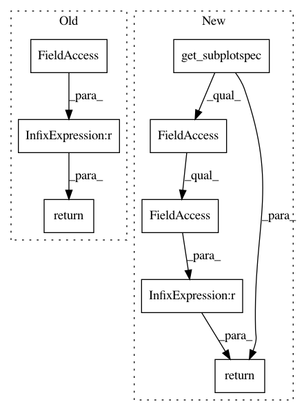

f4412c0f775b3f4ed6e466c39c8c44758ac2df60,lib/matplotlib/axes/_subplots.py,SubplotBase,is_last_row,#SubplotBase#,139
Before Change
return self.rowNum == 0
def is_last_row(self):
return self.rowNum == self.numRows - 1
def is_last_col(self):
return self.colNum == self.numCols - 1
After Change
return self.get_subplotspec().rowspan.start == 0
def is_last_row(self):
return self.get_subplotspec().rowspan.stop == self.get_gridspec().nrows
def is_first_col(self):
return self.get_subplotspec().colspan.start == 0
In pattern: SUPERPATTERN
Frequency: 4
Non-data size: 8
Instances
Project Name: matplotlib/matplotlib
Commit Name: f4412c0f775b3f4ed6e466c39c8c44758ac2df60
Time: 2019-09-06
Author: anntzer.lee@gmail.com
File Name: lib/matplotlib/axes/_subplots.py
Class Name: SubplotBase
Method Name: is_last_row
Project Name: matplotlib/matplotlib
Commit Name: f4412c0f775b3f4ed6e466c39c8c44758ac2df60
Time: 2019-09-06
Author: anntzer.lee@gmail.com
File Name: lib/matplotlib/axes/_subplots.py
Class Name: SubplotBase
Method Name: is_last_col
Project Name: matplotlib/matplotlib
Commit Name: f4412c0f775b3f4ed6e466c39c8c44758ac2df60
Time: 2019-09-06
Author: anntzer.lee@gmail.com
File Name: lib/matplotlib/axes/_subplots.py
Class Name: SubplotBase
Method Name: is_first_row
Project Name: matplotlib/matplotlib
Commit Name: f4412c0f775b3f4ed6e466c39c8c44758ac2df60
Time: 2019-09-06
Author: anntzer.lee@gmail.com
File Name: lib/matplotlib/axes/_subplots.py
Class Name: SubplotBase
Method Name: is_first_col